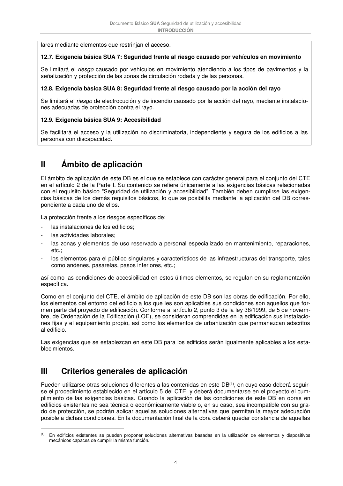

DB-SUA · 12.7. Exigencia básica SUA 7: Seguridad frente al riesgo causado por vehículos en movimiento · versión 2022-06-14 · capa oficial
Formatos: JSON compacto · Markdown · PDF fuente
Ámbito del documento · texto del ámbito · documento y tablas
ID técnico a0017 · PDF pág. 4 · jerarquía no validada por persona · contrastado con el literal de la página 4 (candidato tipográfico); no validado por persona · padre: a0013
12.7. Exigencia básica SUA 7: Seguridad frente al riesgo causado por vehículos en movimiento Se limitará el riesgo causado por vehículos en movimiento atendiendo a los tipos de pavimentos y la señalización y protección de las zonas de circulación rodada y de las personas.

PDF fuente redistribuible: copia fiel enlazada en esta página (SHA256 verificado).